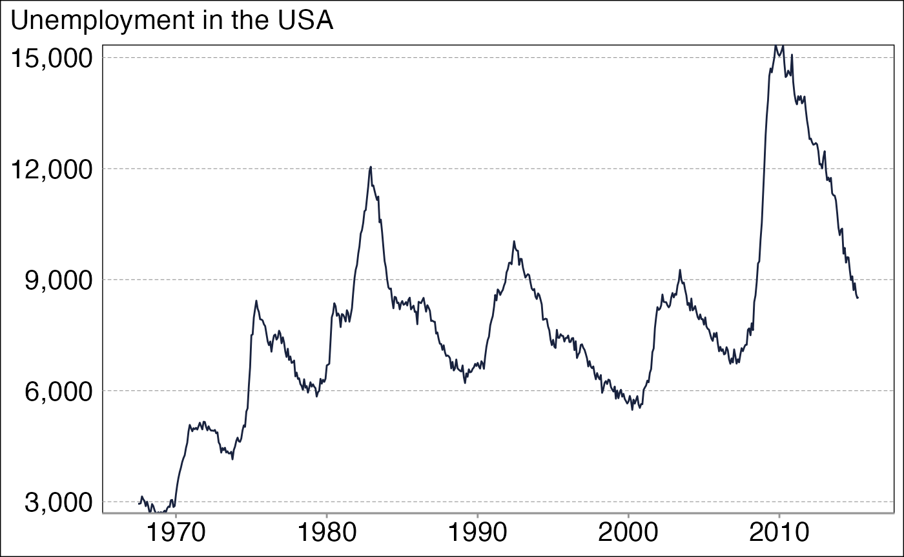

Introduction
Introduction.RmdTheme & language setup
ggplot(economics) +
geom_line(aes(date, unemploy), color = closest_mnb_color("blue")) +
theme_mnb_ts(base_size = 16) +
labs(subtitle = "Munkanélküliség az USA-ban") +
scale_y_number()
options(lang = "en")
ggplot(economics) +
geom_line(aes(date, unemploy), color = closest_mnb_color("blue")) +
theme_mnb_ts(base_size = 16) +
labs(subtitle = "Unemployment in the USA") +
scale_y_number()
Working with colors
mnb_colors()
#> [1] "#18223e" "#6fa0be" "#f8c567" "#b2242a" "#7aa140" "#da3232" "#e57b2b"
#> [8] "#787975" "#b9e1eb"We developed a function to simple rewrite user specified colors to the ones that matches our corporate style.
closest_mnb_color("red")
#> [1] "#da3232"Tables
data(mtcars)
mtcars |>
head() |>
tibble::rowid_to_column("model type") |> # long colname
gt_mnb(title = "MTcars dataset", comment = "This is a built-in dataset")| MTcars dataset | |||||||||||
| MPG | CYL | DISP | HP | DRAT | WT | QSEC | VS | AM | GEAR | ||
|---|---|---|---|---|---|---|---|---|---|---|---|
| 21.00 | 6 | 160 | 110 | 3.90 | 2.62 | 16.46 | 0 | 1 | 4 | ||
| 21.00 | 6 | 160 | 110 | 3.90 | 2.88 | 17.02 | 0 | 1 | 4 | ||
| 22.80 | 4 | 108 | 93 | 3.85 | 2.32 | 18.61 | 1 | 1 | 4 | ||
| 21.40 | 6 | 258 | 110 | 3.08 | 3.21 | 19.44 | 1 | 0 | 3 | ||
| 18.70 | 8 | 360 | 175 | 3.15 | 3.44 | 17.02 | 0 | 0 | 3 | ||
| 18.10 | 6 | 225 | 105 | 2.76 | 3.46 | 20.22 | 1 | 0 | 3 | ||
| This is a built-in dataset | |||||||||||
MNB color scales
library(dplyr)
#>
#> Attaching package: 'dplyr'
#> The following objects are masked from 'package:stats':
#>
#> filter, lag
#> The following objects are masked from 'package:base':
#>
#> intersect, setdiff, setequal, union
economics |>
select(date, unemploy, psavert) |>
mutate(across(2:3, \(x) x / lag(x) - 1)) |>
tail(10) |>
tidyr::pivot_longer(- 1) |>
ggplot(aes(date, name, fill = value)) +
geom_tile(color = "black") +
theme_mnb_ts(base_size = 16) +
scale_fill_mnb_divergent_b() +
labs(subtitle = "Macrostatistics of the USA", fill = "Relative m-o-m change")